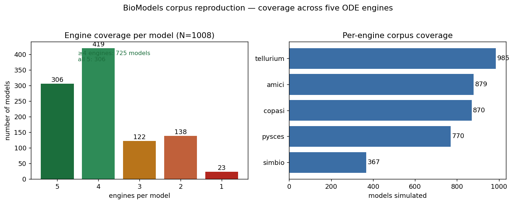
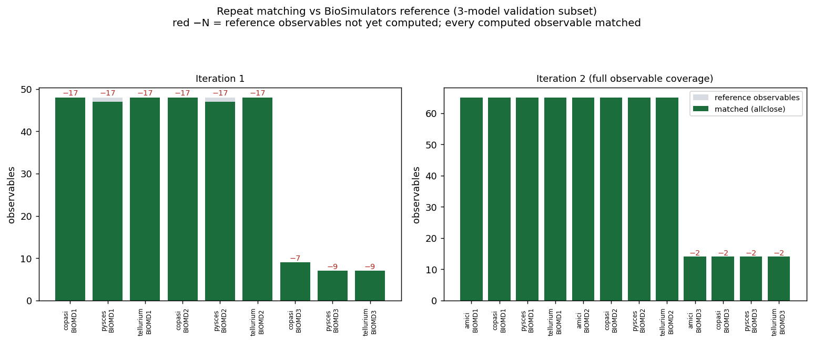

corpus-reproduction — figure gallery
2 figures across 2 studies. Use the list on the left to jump to any study; each figure has its own ↓ download.
Full BioModels reproduction across all simulators (1008 models × 5 engines)
full-corpus-reproduction


Repeat- and reproducibility-matching vs the BioSimulators reference study
repeat-matching

